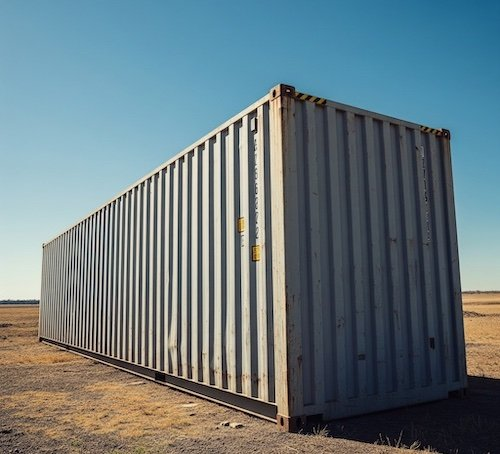

A comprehensive data center decommissioning checklist is the difference between a smooth, secure shutdown and a chaotic process that exposes your organization to data breaches, compliance violations, and unexpected costs. Whether you are consolidating facilities, migrating to the cloud, relocating offices, or responding to a merger or acquisition, a structured approach ensures nothing falls through the cracks.
High Tide Commodities Management has managed data center decommissioning projects throughout Connecticut for over 25 years. We have seen what happens when organizations rush the process or skip critical steps. This eight-step data center decommissioning checklist reflects the best practices we have refined across hundreds of projects and will guide your team through every phase of a secure, compliant shutdown.
Step 1: Form a Decommissioning Team and Assign Roles
Every successful decommissioning project starts with assembling the right team. Identify stakeholders from IT, facilities, security, compliance, finance, and operations. Assign a project manager who has authority to make decisions and coordinate across departments. Define clear roles and responsibilities so every team member knows exactly what they are accountable for throughout the process.
Your decommissioning team should include representatives who understand the technical infrastructure, data security requirements, regulatory obligations, and business continuity needs. If your internal team lacks experience with large-scale decommissioning, partnering with an experienced data center decommissioning provider like High Tide fills that gap and brings proven processes to the project from day one.
Step 2: Conduct a Complete Asset Inventory
Before disconnecting a single cable, you need a complete picture of everything in the facility. Conduct a thorough asset inventory that captures every piece of equipment including servers, storage arrays, networking gear, UPS systems, PDUs, cabling, and even non-IT infrastructure like raised floor tiles and cooling equipment. Document serial numbers, asset tags, locations, configurations, and current operational status for each item.
This inventory becomes the master reference for your entire project. It drives your data destruction plan, determines logistics requirements, identifies assets with remarketing value, and serves as the baseline for final reconciliation when the project is complete. Skipping or rushing the inventory phase is the most common source of problems during decommissioning.
Step 3: Create a Data Migration and Backup Plan
Before any equipment is powered down, verify that all critical data has been successfully migrated to its new home and that verified backups exist. Work with application owners and database administrators to confirm that every workload, dataset, and configuration has been accounted for. Run validation checks on migrated data to ensure integrity and completeness.
Document which systems can be safely powered down and in what order, as dependencies between servers and applications can create cascading failures if shutdown sequencing is not carefully planned. Establish a rollback window during which systems can be brought back online if migration issues are discovered after shutdown.
Step 4: Develop a Certified Data Destruction Plan
Data security is the highest-stakes element of any decommissioning project. Every storage device in the facility, including hard drives, SSDs, tapes, and flash storage embedded in servers and networking equipment, must be addressed in your destruction plan. Determine which devices require physical destruction, which can be sanitized for remarketing, and which methods are appropriate for each media type based on NIST 800-88 guidelines.
Your data destruction plan should specify who performs the destruction, where it takes place, what documentation is required, and how Certificates of Destruction will be generated and stored. For regulated industries, the plan must demonstrate compliance with HIPAA, SOX, PCI-DSS, or other applicable frameworks. Professional data destruction services ensure every device is handled according to the appropriate standard with full audit trail documentation.
Step 5: Coordinate Logistics and Scheduling

Decommissioning logistics involve coordinating people, equipment, vehicles, and facilities across a timeline that often has hard deadlines driven by lease expirations or business milestones. Develop a detailed schedule that accounts for equipment disconnection, packing, loading, transportation, and processing at the destination facility. Identify any building access restrictions, elevator weight limits, loading dock availability, and security requirements that could affect the timeline.
Order packing materials, secure containers, pallets, and any specialized equipment well in advance. If working in a shared facility or colocation environment, coordinate with the facility manager to avoid conflicts with other tenants. Build contingency time into the schedule because unexpected discoveries during disconnection are common and can delay the process.
Step 6: Disconnect, De-Rack, and Pack Equipment
With your schedule set and materials ready, begin the physical work of disconnecting and removing equipment. Follow a systematic approach: power down systems in the correct sequence, disconnect network and power cables, label all cables and connections for reference, remove equipment from racks, and pack everything securely for transport. Photograph rack positions and cable runs before disconnection to create a visual record.
Handle equipment carefully to preserve remarketing value. Servers, switches, and storage arrays in good physical condition can generate significant recovery value through IT asset disposition programs. Equipment that is damaged during careless removal loses remarketing potential and becomes recycling material instead, reducing your financial return on the project.
Step 7: Transport and Process Assets
Secure transportation is critical during this phase. All vehicles should be GPS-tracked, fully insured, and operated by vetted personnel. Maintain chain-of-custody documentation at every handoff point from the data center to the processing facility. Equipment should travel in locked, tamper-evident containers whenever possible.
At the processing facility, assets are sorted into categories: devices requiring data destruction, equipment suitable for remarketing, components destined for recycling, and any hazardous materials requiring special handling. Each category follows its own processing workflow with appropriate documentation generated at every step.
Step 8: Complete Documentation and Final Reporting
The final step on your data center decommissioning checklist is assembling comprehensive project documentation. This includes Certificates of Destruction for all sanitized media, asset disposition reports showing the final status of every inventoried item, recycling certificates for processed materials, and a project completion summary. Compare the final disposition records against your original asset inventory to verify that every item has been accounted for.
This documentation package serves multiple purposes: it satisfies audit and compliance requirements, provides evidence for insurance and legal records, supports financial reconciliation of recovered asset values, and creates a reference for future decommissioning projects. Store copies securely and retain them according to your organization's records management policy.
Common Mistakes to Avoid
Even with a thorough checklist, organizations frequently stumble on these avoidable errors:
- Starting without a complete inventory: Discovering unknown equipment mid-project disrupts schedules and budgets
- Neglecting embedded storage: Network switches, printers, copiers, and even some UPS systems contain flash storage that holds configuration data and potentially sensitive information
- Underestimating the timeline: Decommissioning always takes longer than expected, especially in facilities with years of accumulated infrastructure
- Skipping data destruction verification: Trust but verify. Confirm that every storage device listed in your inventory appears on a Certificate of Destruction
- Ignoring environmental regulations: Batteries, CRT monitors, mercury-containing lamps, and certain electronic components are classified as hazardous waste and require special handling under Connecticut DEEP regulations
- Failing to recover asset value: Equipment that could be remarketed for thousands of dollars sometimes gets sent directly to recycling because no one evaluated its market potential
Why Partner with High Tide
High Tide Commodities Management brings over 25 years of experience to every data center decommissioning project. From our Branford, CT facility, we provide complete project management covering asset inventory, certified data destruction, secure logistics, value recovery through our IT asset disposition program, and environmentally compliant recycling for end-of-life equipment. We handle every item on this checklist so your team can focus on your business.
We have completed decommissioning projects for organizations across Connecticut in healthcare, finance, government, education, and technology. Our single-source approach means one vendor, one point of contact, and one comprehensive documentation package covering every aspect of your project from first assessment to final report.
Contact High Tide today to discuss your data center decommissioning project or request a free on-site assessment. Call (203) 687-9370 to speak with our experienced team about planning your secure, compliant shutdown.